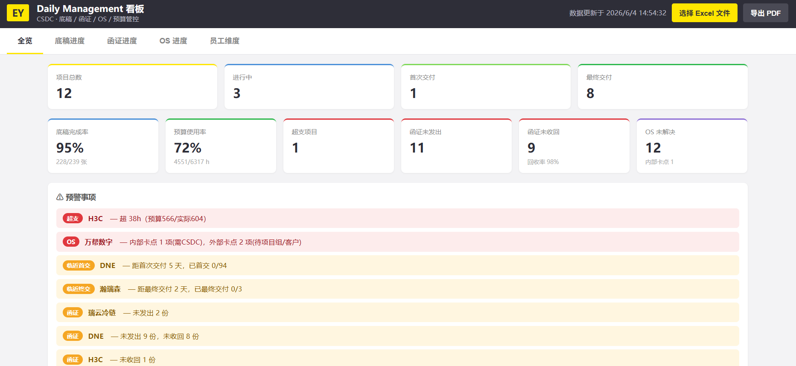
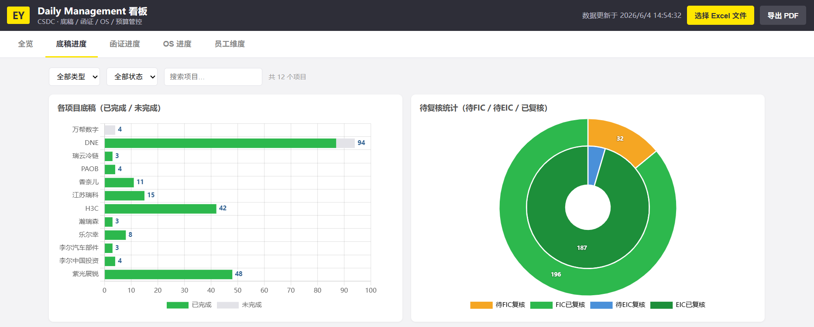
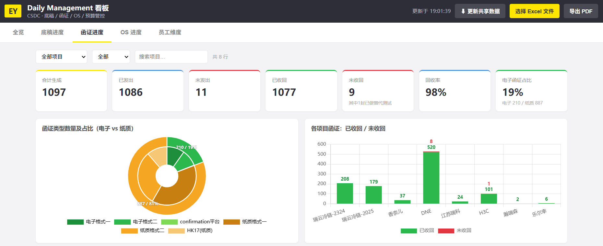
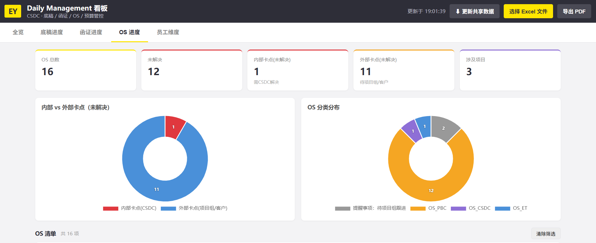

从“化繁为简”到“体系化管理” — 不是准备好去做经理，而是已经在以经理的方式做事。
从Firm转入 CSDC 一年多，完成了从高效个人执行者到团队管理者 + 流程设计者的角色跃迁。在 FY26 年审中，不只是在“做任务”，同时还在搭体系、建标准、带队伍。
经理 Ryan 对我的评价是“能把复杂问题做简单”。以下三个真实业务场景，展示了我是如何将这种能力系统化运用的。
年审期间多项目并行，信息碎片化，管理成本高。那天早上我同时收到三个项目组的消息——一个问函证进度、一个催底稿 OS、一个要 PBC 清单更新。面前是 12 个不同的 Excel 表，分散在不同文件夹。
我的解法：重新设计信息架构，将项目基础信息、函证进度、底稿进度、OS 追踪、预算管控全部整合为一张综合进度大表，借助AI生成HTML看板，并加入预警机制。




DNE 项目需要交付 80+ 张借款底稿，涵盖 IFRS 和 PRC 双准则的 AFS 披露。项目组说"照着上年做就行"，但上年情况是：各公司模板不统一、公式混乱、出错率高。如果简单下发任务，100% 会出现大规模返工。
我的决策：不急于开工，先花 2 天重构底层模板。推行“消化 → 重构 → 人才赋能”闭环管理模式——统一标准化模板、搭建公式实现自动取数、手把手带教 Staff 和 Intern 掌握底稿核心点。
一个 IPO 项目需要做汇兑损益月度测算，要结合期初数和JE得出货币性项目各月余额。而一个单体公司一年的序时账就有十几个 Excel 文件，每个超 100 万行。传统 Excel 直接崩溃，按人工方式一个公司可能需要 1-2 天。
我的解法：引入 AI 辅助编写 Python 脚本，实现数据清洗、筛选与处理的全流程自动化。反复调试后，将每家公司的处理时间从 1-2 天压缩至数分钟，产出数据直接用于审计底稿。
不只关心“自己的活干完没有”，更关心“组织的能力有没有因为我而提升”。
作为主力成员编制 Sales TOD 的 SOP 及关键文档，协助团队优化 E1/E2 的 SOP。深度参与 4 个 Pilot 项目，总结痛点并反哺 SOP 优化。
→ 今年这些科目已正式上线为新服务
核心参与质检 Kaizen 改进项目，聚焦FY26底稿高频易错点。开展根因分析（RCA），从标准底稿、SOP、项目管理、培训拉通等多方面提出改进建议。
→ 从“事后救火”到“预防管理”的转型
不是泛泛而谈的愿景，而是具有可量化目标的行动计划。
不仅把手头的活做好，更带着团队一起把路走宽。
EY· Shape the future with confidence· 聚信心 塑未来